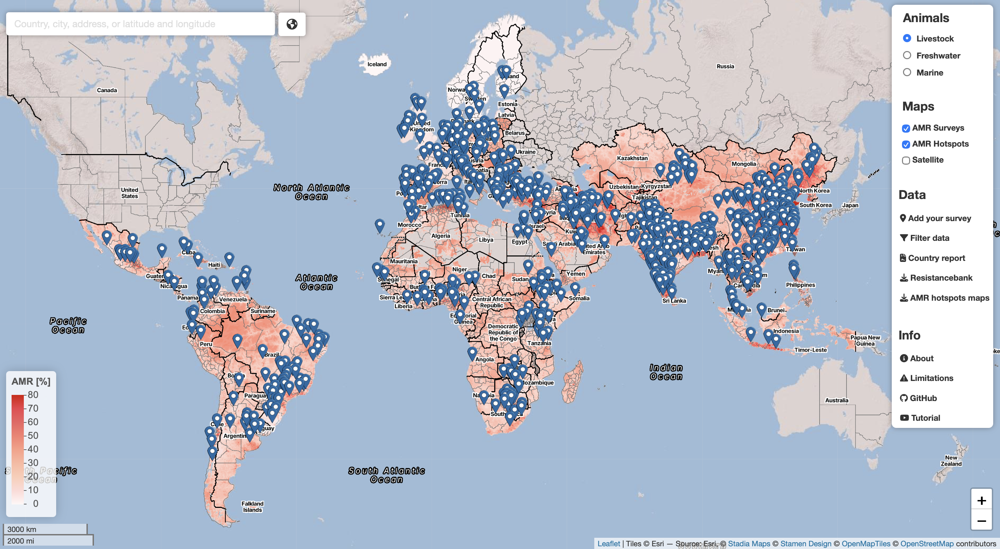

Antimicrobial resistance mapping

Antimicrobial resistance · Surveillance for food animals
resistancebank.org
Online repository of antimicrobial resistance surveys in animals with high-resolution maps, databases, and country-level reports.